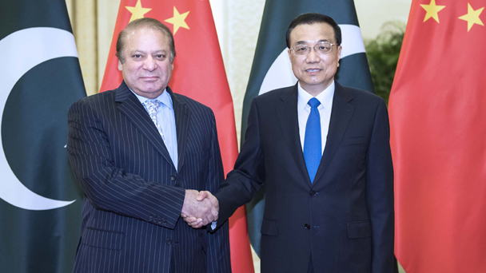

新华社北京5月13日电 国务院总理李克强13日上午在人民大会堂会见来华出席“一带一路”国际合作高峰论坛的巴基斯坦总理谢里夫。
李克强表示，中方高度重视发展同巴基斯坦的友好合作关系，愿同巴方携手努力，将两国高水平的政治互信转化为更多互利互惠的合作成果，推动两国全天候战略合作伙伴关系向前发展。
李克强指出，中巴经济走廊是两国共同推动的重点项目，合作已取得积极成效。希望双方更好对接发展战略，稳步、按期、高质量推进重大交通基础设施和能源等项目建设，加强产能合作，促进贸易平衡发展。希望巴方加大力度保护中方在巴人员和相关项目的安全。
谢里夫表示，巴中两国是友好邻邦和战略合作伙伴。巴基斯坦各界一致支持巴中友好事业。巴中经济走廊是两国合作的重大项目，为巴经济发展提供了重要机遇。巴方将全力加快走廊建设，采取措施保证中方企业和人员的安全，确保相关项目如期推进。巴方希望进一步加强两国产能、贸易合作，愿为中国企业赴巴投资提供便利。
双方还就共同关心的双边和地区问题深入交换看法。
会见后，两国总理共同见证了双方经济技术等领域合作文件的签署。
国务委员杨晶参加会见。